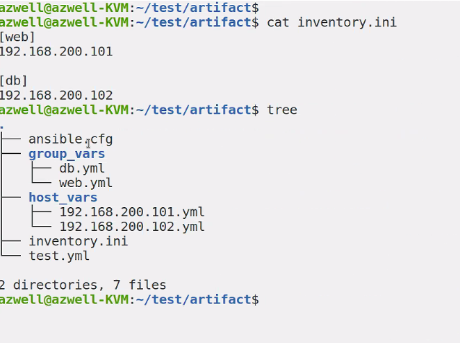
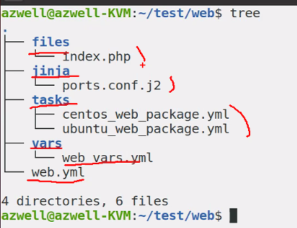

8. 아티팩트 재사용 - 파일
- Ansible에서 아티팩트란? 플레이북, 플레이, 테스크, 변수, 역할 같은 것들
하나의 큰 파일로 playbook을 작성할 수 있지만, 재사용성을 위해서 별도의 파일로 분리한다.
8.1 변수 재사용
1) 플레이북에서 변수 재사용
(1) var_files 키워드
vars 보다 vars_files가 우선순위가 높다.
- hosts: all
remote_user: root
vars:
favorcolor: blue
vars_files: # 플레이의 속성
- /vars/external_vars.yaml
tasks:
- name: This is just a Placeholder
command: /bin/echo foo
(2) include_vars
tasks:
- name: Bare include(free-form) # default가 자유양식
include_vars: myvars.yaml
- name:
include_vars:
file: stuff.yaml
name: stuff
include_vars 는 모듈이라서 task 안에 써야함
- 기존에 하던 실습의 변수를 vars_files로 설정
vars_files : 변수들을 모아 놓은 파일.
vars 를 사용하는것 보다 유용하게 사용할 수 있다.
---
- name: Simple Web Deploy
hosts: 192.168.200.101
force_handlers: true
vars_files:
- vars/web_vars.yml
tasks:
- name: Install Pacakge for Ubuntu
apt:
name: apache2, libapache2-mod-php
update_cache: true
state: present
when: ansible_distribution == "Ubuntu"
- name: Install Package for CentOS
yum:
name: httpd, mod-php
state: present
when: ansible_distribution == "CentOS"
- name: Copy PHP Contents
copy:
src: '{{ contents_file }}'
dest: '/var/www/html/{{ contents_file }}'
backup: true
- name: Configure Apache Port
template:
src: ports.conf.j2
dest: '/etc/apache2/ports.conf'
notify:
- Restart Service
- name: Start Service
service:
name: apache2
state: started
enabled: true
handlers:
- name: Restart Service
service:
name: apache2
state: restarted
enabled: true
- hosts: 192.168.200.102
vars_files:
- vars/web_vars.yml
tasks:
- name: Checking
uri:
url: "http://192.168.200.101:{{ apache_port }}/{{ contents_file }}"
ignore_errors: true
# 위의 플레이랑 동일 include vars 사용 vars_files가 선호됨
- hosts: 192.168.200.102
tasks:
- include_vars: # 모듈
vars/web_vars.yml
- name: Checking
uri:
url: "http://192.168.200.101:{{ apache_port }}/{{ contents_file }}"
ignore_errors: true
- vars/web_vars.yml ```yaml
contents_file: index.php apache_port: "8080"
### 2) 인벤토리/플레이북 디렉토리에서 변수 재사용
ini에다가
```ini
[그룹명:vars]
변수1=값
변수2=값
위처럼 해도 되지만, 그룹 변수, 호스트 변수를 더 잘 씀
(1) 그룹 변수
같은 경로에 group_vars 폴더 내에 그룹과 동일한 이름의 yml 파일이 있으면 변수로 활용 가능
- 실습 ini ```yaml [web] 192.168.200.101
[db] 192.168.200.102
cfg
```cfg
[defaults]
inventory=inventory.ini
---
- hosts: all
tasks:
- debug:
msg: "{{ msg }}"
azwell@azwell-KVM:~/test/artifact$ tree
.
├── ansible.cfg
├── group_vars
│ ├── db.yml
│ └── web.yml
├── inventory.ini
└── test.yml
(2) 호스트 변수

Ansible 은 현재 디렉토리에 다음과 같은 디렉토리를 참고함
group_vars : 그룹 변수
host_vars : 호스트 변수
8.2 작업 재사용
섹션의 이름이 작업의 재사용이지만, 작업만 재사용할 수 있는 것은 아니다.
혼자서 개발할 때는 굳이 필요없는데 여러명이서 개발하고 통합할 때 좋음
- task.yaml ```yaml
- name: task1 debug:
name: task2 debug: ```
main.yaml ```yaml
- hosts: 192.168.200.101
tasks:
- import_tasks: task.yaml
- name: task3 debug:
- name: task4 debug: ```
include_tasks 모듈과 import_tasks 모듈 비교
ansible-playbook <야뮬명> --list-tasks 시
include_tasks는 동적, import_tasks는 정적으로 가져온다.
import의 경우 미리 사전에 playbook을 처리한다.
| 항목 | include | import |
|---|---|---|
| 재사용형식 | 동적 | 정적 |
| 처리시점 | 모듈실행시 | 플레이북 파싱시 전처리 |
| 작업옵션 | 작업자체를포함하는 경우만 | 모든 가져오기 모듈에 적용가능 |
| 반복문에서 호출 | 사용가능 | 사용 불가 |
| 태그 및 작업 목록 확인 | X | O |
| 핸들러 알림 | 파일 내의 작업 이름 호출 X | 파일 내의 작업 이름 호출 O |
| 작업 시작 | X | O |
| 플레이북 전체 가져오기 | X | O |
| 변수 파일 가져오기 | O | X |
기본적으로 import를 사용하는 게..
- include, import 실습
multi vendor playbook을 만들 때 import 시키는 거 주로 함

- name: Simple Web Deploy
hosts: 192.168.200.101
force_handlers: true
vars_files:
- vars/web_vars.yml
tasks:
- import_tasks: tasks/ubuntu_web_package.yml
when: ansible_distribution == "Ubuntu"
- import_tasks: tasks/centos_web_package.yml
when: ansible_distribution == "CentOS"
- name: Copy PHP Contents
copy:
src: 'files/{{ contents_file }}'
dest: '/var/www/html/{{ contents_file }}'
backup: true
- name: Configure Apache Port
template:
src: jinja/ports.conf.j2
dest: '/etc/apache2/ports.conf'
notify:
- Restart Service
- name: Start Service
service:
name: apache2
state: started
enabled: true
handlers:
- name: Restart Service
service:
name: apache2
state: restarted
enabled: true
- hosts: 192.168.200.102
gather_facts: no
tasks:
- name: Include variables
include_vars: vars/web_vars.yml
- name: Checking
uri:
url: "http://192.168.200.101:{{ apache_port }}/{{ contents_file }}"
ignore_errors: true